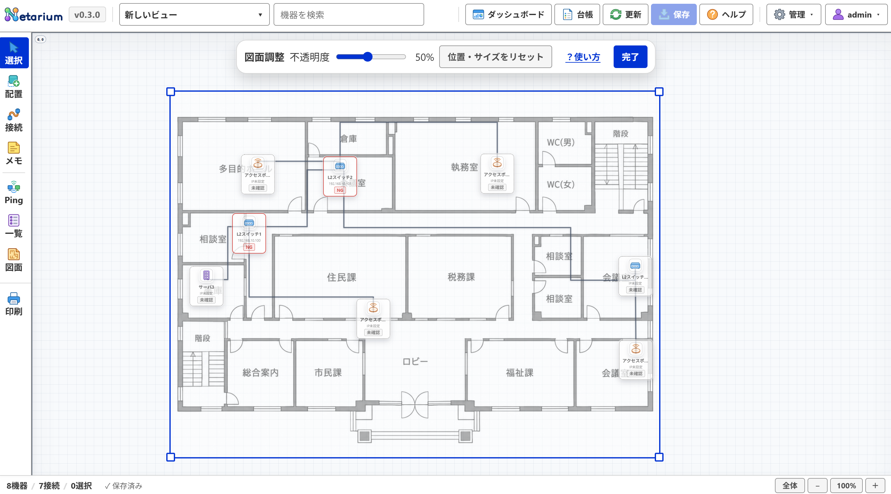
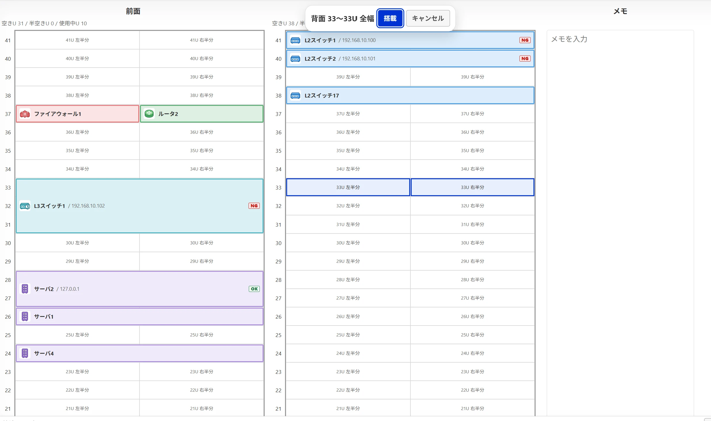

ビュー・ラックの操作ガイド
論理構成図・フロア物理配置図・ラックビューの作成・切り替え、下絵図面の調整、およびラック内機器の搭載・棚板管理を説明します。
ビューの管理と切り替え
上部バー中央のビュー検索欄で、作業対象の図面を素早く切り替えます。
- 上部バーのビュー名欄をクリックするか、文字を入力して候補を絞り込みます（名称・施設・フロア・種別で検索可能）。
- 目的のビューをクリック、または上下キーとEnterで選択すると即座にキャンバスへ展開されます。
- 新規作成・編集（管理者のみ）: 上部バーの「管理」→「ビュー管理」を開きます。名称・種別・施設・フロアを入力して「登録」または「変更」を押します。
| ビュー種別 | 特徴と用途 |
|---|---|
| 論理構成図 | ネットワークの論理的なセグメント、ルータ・スイッチのトポロジーを自由にレイアウトして結線します。 |
| フロア物理配置図 | 庁舎やオフィスの平面図（下絵画像）を配置し、機器や情報コンセントの実位置を可視化します。 |
| ラックビュー | 19インチラックのユニット（U）単位で機器の前面・背面搭載位置や棚板を管理します。 |
フロア図面（下絵画像）
物理・フロア配置図では、建物の平面図やレイアウト図を下絵画像として登録し、拡大縮小・位置調整・中心回転できます。


- 「管理」→「ビュー管理」でフロア種別のビューを選び、「図面設定」を押します。
- 画像登録: PNGまたはJPEG形式（30MiB以下、各辺7,000px以下）を選択してアップロードします（長辺4,096px以下へ自動縮小して保存）。
- 配置調整: 図面本体をドラッグして位置を移動し、四隅の青いハンドルで拡大・縮小します。
- 上部バーのスライダー（10〜100%）または数値欄（10〜100の整数）で不透明度を調整します。スライダーの目盛りには吸着しません。スライダーを動かすと数値欄の入力を置き換えます。
- 角度は-180〜180度、小数第1位まで指定できます。左右のボタンは0.1度ずつ回転します。0を入力すると角度だけを戻せます。「位置・サイズをリセット」は位置と倍率だけを戻し、不透明度と角度を保ちます。
- 不透明度と角度の数値欄では入力中にプレビューし、Enterまたはフォーカスを外すと自動保存します。不正な値は保存しません。操作の確定ごとに自動保存し、「完了」で調整を終了します。競合・認証失効や画面切替では未確定の入力を破棄します。保存失敗や未確認状態はフッターで確認してください。
図面の調整中は接続の経路調整は起動できません。完了してから接続線を操作してください。
ラックビューと棚板
物理サーバーラックの前面・背面における機器搭載（1〜60U、規定値42U）および棚板を管理します。


- ビュー切り替え欄で対象のラックビューを開きます。
- 前面または背面の空きユニット（U）をクリック、またはマウスでドラッグして範囲を選択し、ボタンを離します。同じ側の上下選択はハーフ幅、左右をまたぐ選択は全幅です。
- 開いた搭載設定で機器を選び、搭載位置を確認して確定します。タッチ・ペンは開始セルと終了セルを順にタップし、キーボードは各セルでEnterまたはSpaceを押します。選択中の「機器を搭載」で手動確定し、「キャンセル」やEscapeで選択を取り消すこともできます。
- 搭載設定は左で機器の選択・登録、機器情報と現在位置を確認し、右の「搭載先の設定」で位置を編集します（狭い画面では縦並び）。位置変更では検索欄を表示しません。検索時は未入力でも候補を開き、名称・IPとアイコン付き種別フィルタで絞り込めます。候補は一覧内をスクロールし、上下キーとEnterで選択、Escapeで一覧だけを閉じます。
- 「新しい機器を登録」では種別・機器名・任意のIPを入力します。種別別の初期名は変更でき、手入力名は種別を変えても保持します。機器名を空欄にした場合は初期名を採用し、IP空欄でも登録できます。
- 搭載位置の変更: 搭載済み機器を別の空きUへドラッグすると、搭載位置や幅（全幅／半幅）を変更できます。
- 棚板（シェルフ）: 左の「棚板」を押し、空きUをクリック、または範囲選択します。マウスはボタンを離すと設定が開きます。棚板は全幅で、左右2ペインの画面で作成・保存後、小型機器（ONU、ハブ等）を同一画面から連続追加できます。左は上から機器追加、搭載機器一覧の順で、一覧右端の × から取り外せます。右で棚板名・設置位置を設定します。ラック図上には棚板名・総台数と種別アイコン（最大8台＋残数）を表示します。
- 搭載解除は機器をクリックして右パネルの「ラックから外す」を押します（機器台帳のデータは削除されません）。